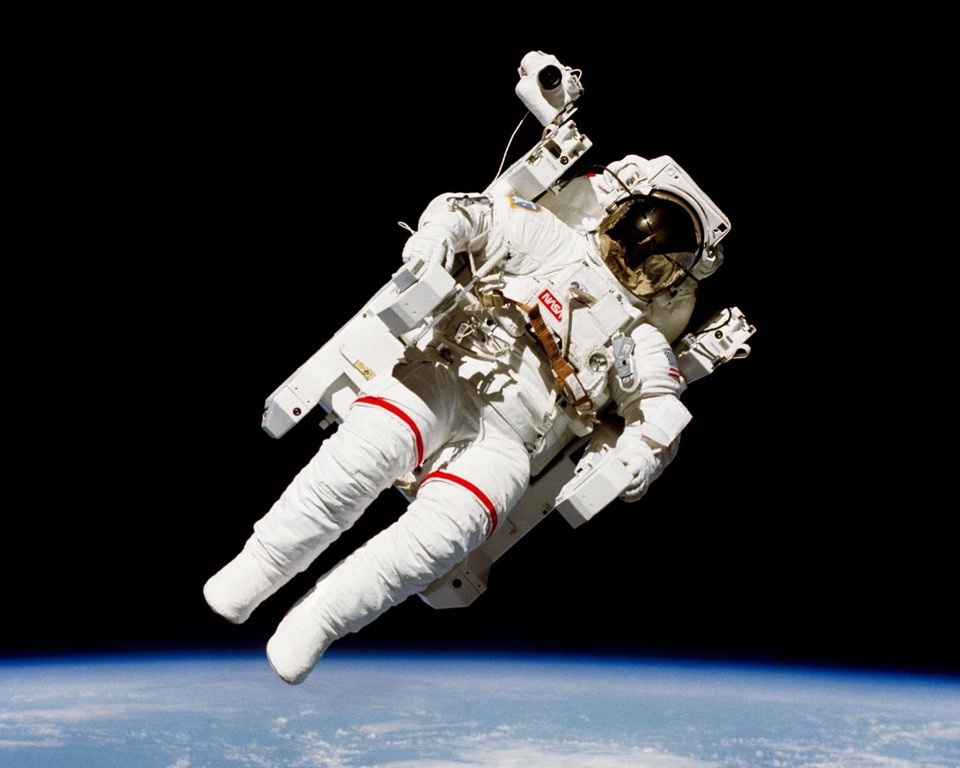
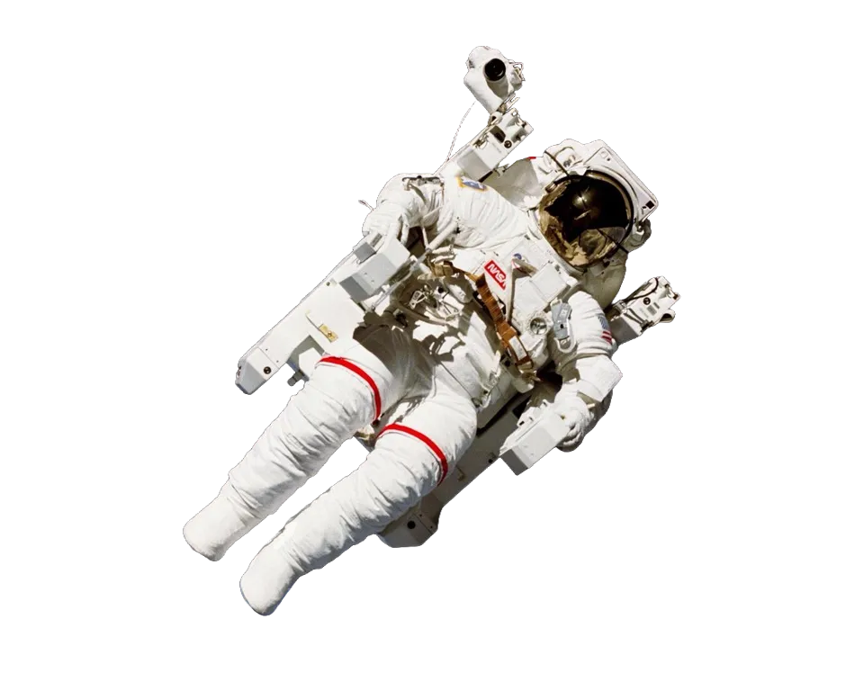

rm background
Cut out the subject of a photo, without uploading it anywhere. The model runs on your device, in this tab.


Photo: Bruce McCandless II on the first untethered spacewalk, 1984. NASA.
How it works
This page uses transformers.js to run BRIA RMBG-1.4, a segmentation model, with WebGPU when your browser has it and WebAssembly otherwise. The first time, the model weights (about 44–88 MB) are downloaded and cached by your browser. After that it works offline.
Your images are read straight from disk into the model and never sent over the network. You can confirm this in your browser's network tab. RMBG-1.4 is licensed for non-commercial use.